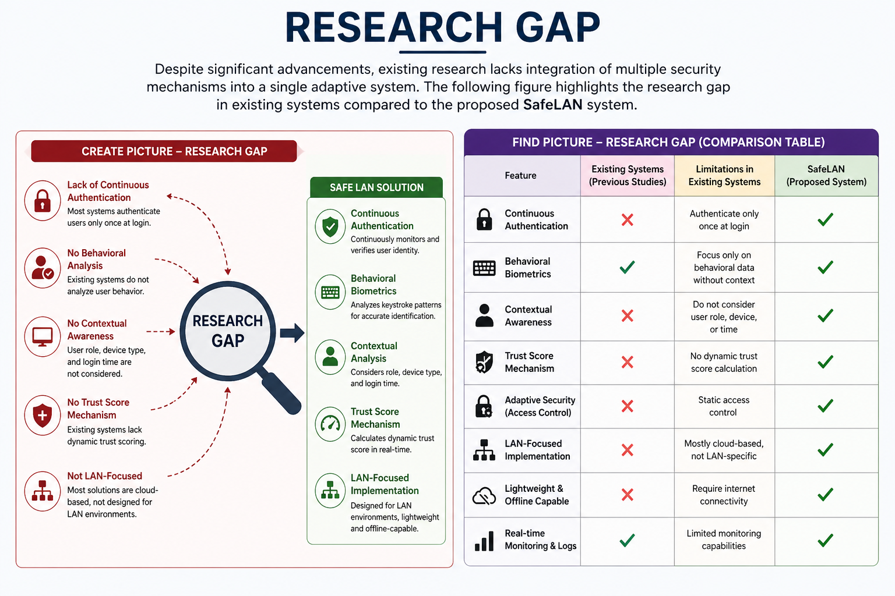

Domain
Literature Survey
Modern organizations rely heavily on Local Area Networks (LANs) for internal file sharing and
communication. However, traditional authentication mechanisms such as passwords and role-based access
control are no longer sufficient to protect sensitive data. According to the research, these methods only
verify users at login and fail to provide continuous authentication, leaving systems vulnerable to insider
threats and unauthorized access.
Recent studies have introduced behavioral biometrics as a promising solution. Keystroke dynamics, which
analyze typing patterns such as dwell time and flight time, have been widely used to identify users
uniquely. Machine learning models like Support Vector Machines (SVM), Random Forest, and deep learning
approaches such as CNN and RNN have significantly improved authentication accuracy.
Research Gap
Despite significant advancements, existing research lacks integration of multiple security mechanisms into
a single adaptive system. Most systems focus only on behavioral biometrics without considering contextual
attributes such as user role, device type, and login time. Furthermore, there is limited research focusing
specifically on LAN-based environments, which require lightweight and offline-capable solutions.
The comparison table in the research shows that previous studies lack features such as trust-score-based
authentication, adaptive security mechanisms, and LAN-focused implementation. The proposed SafeLAN system
addresses all these limitations by combining behavioral biometrics with contextual analysis and real-time
trust scoring.

Research Problem
Traditional LAN authentication systems rely on static verification methods, which authenticate users only
once at login. This creates a major security gap because unauthorized users can gain access if credentials
are compromised. Additionally, existing systems do not continuously monitor user behavior, making them
ineffective against insider threats.
The main problem addressed in this research is the lack of a dynamic and adaptive authentication system
that can continuously validate user identity. The study aims to develop a solution that integrates
behavioral biometrics, contextual attributes, and trust scoring to enhance security in LAN-based file
systems.
Objectives
The primary objective of this research is to enhance LAN security by introducing a behavior-based
authentication system. The system aims to replace static password-based authentication with a dynamic
mechanism that continuously evaluates user identity.
Specific objectives include analyzing keystroke patterns, developing a trust score model, implementing
adaptive access control, and reducing insider threats. By achieving these objectives, the system ensures
that only legitimate users can access sensitive files within the LAN environment.
Methodology
The proposed methodology involves multiple stages, including data collection, preprocessing, feature
extraction, and model training. Behavioral data such as typing patterns are collected and analyzed using
machine learning techniques. A hybrid model combining CNN and RNN is used to improve accuracy by capturing
both spatial and temporal features.
The system calculates a dynamic trust score based on user behavior and contextual attributes. If the trust
score falls below a certain threshold, access is restricted or denied. This ensures continuous
authentication and enhances overall system security.
Technologies Used
The SafeLAN system uses a combination of modern technologies, including Python for development, machine
learning libraries such as TensorFlow and Scikit-learn for model training, and data processing tools like
Pandas and NumPy. These technologies enable efficient data analysis and accurate behavioral modeling.
Additionally, the system integrates secure file handling mechanisms, real-time monitoring, and logging
capabilities to ensure data integrity and accountability. The use of advanced technologies makes the system
scalable, reliable, and suitable for real-world applications in organizations.